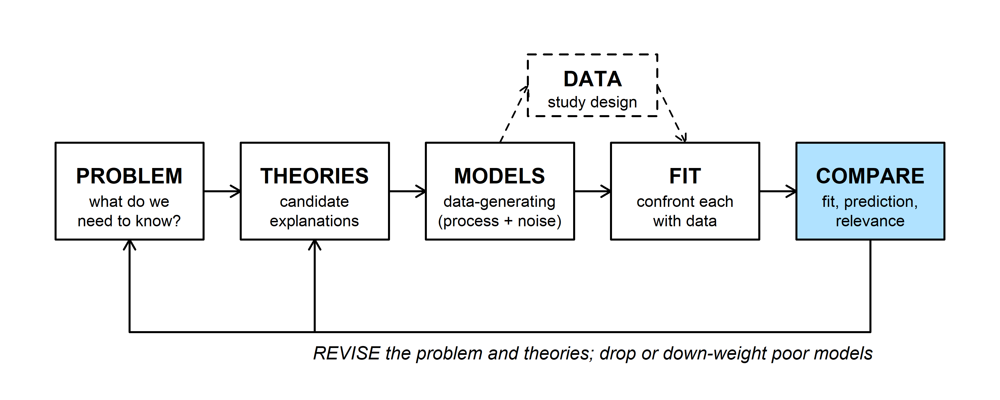
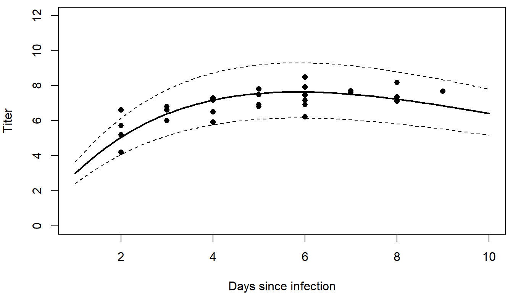
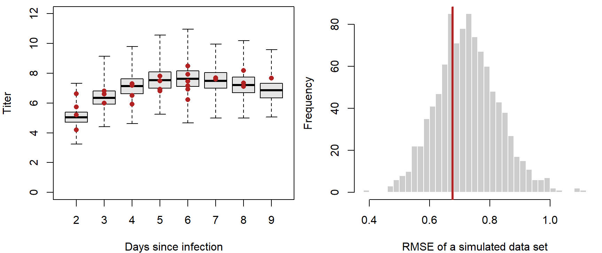
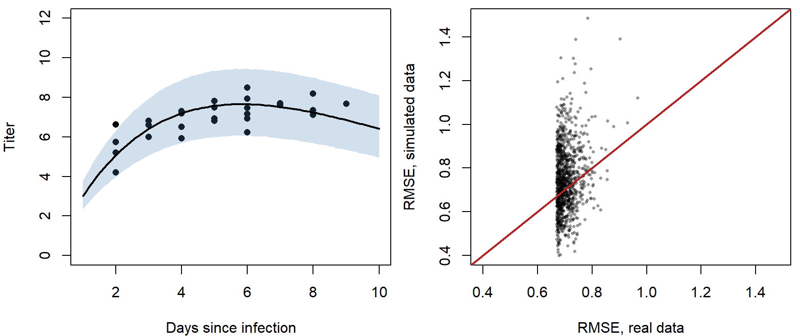
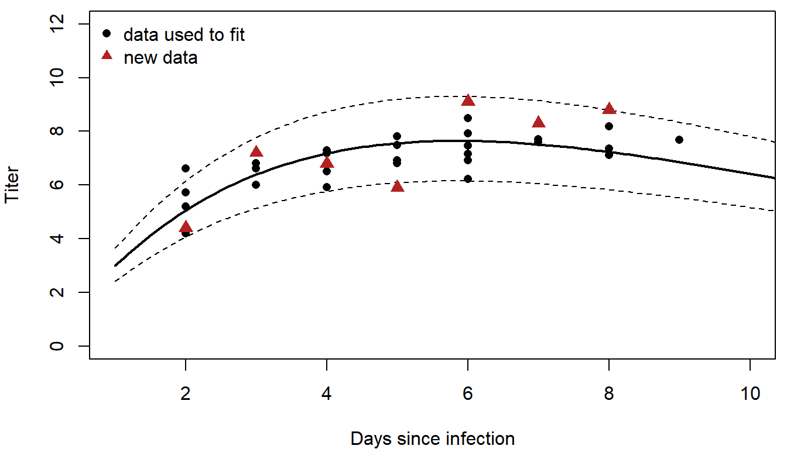
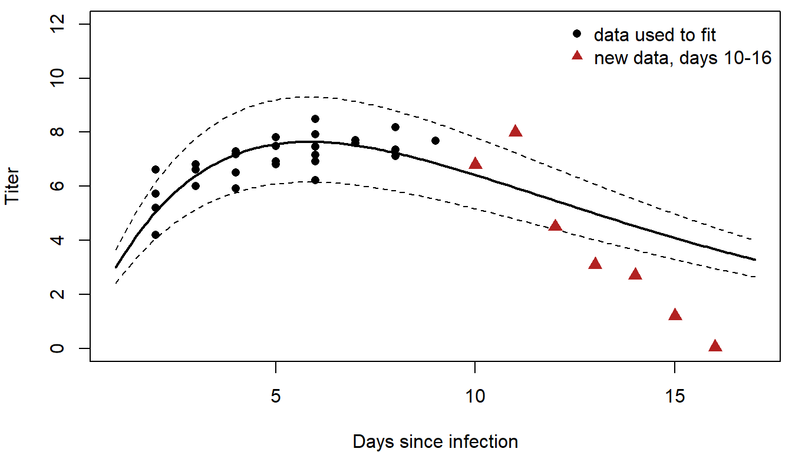
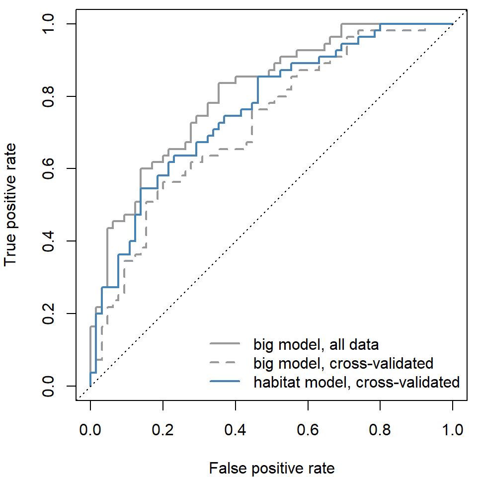

This is a supplemental page: its material may not be covered in class. R code from this page is also in the companion script. Packages: emdbook, cmdstanr. Reading: Bolker 6.6.5 (model criticism and goodness-of-fit tests).
Model comparison ranks a set of candidate models, but the best of a bad set is still a bad model. This page asks whether a fitted model is any good: could it have produced the data, does it predict data it hasn't seen, and does it hold up outside the range of the data used to fit it?

The COMPARE step asks three things of a model: does it fit the data, does it predict better than its rivals (including a null model), and is it relevant to the problem? Model comparison covers the rivals. Here the focus is on a single fitted model, and "good" can mean any of these:
For causal questions, a model can be good without predicting well: what matters is whether it estimates the effect of A on B without bias, which depends on which variables it includes (see causal diagrams).
Bolker's myxomatosis data give virus titers in rabbits infected with grade 1 virus, measured 2 to 9 days after infection. Titer rises and then falls, so a Ricker function \(\mu = a\,t\,e^{-bt}\) describes the mean, with Gamma noise (shape \(s\), scale \(\mu/s\), so the mean is \(\mu\)):
library(emdbook)
myx <- subset(MyxoTiter_sum, grade == 1) # 27 rabbits
ricker <- function(a, b, t) a * t * exp(-b * t)
# Gamma NLL with Ricker mean; 'd' lets us refit to subsets later
nll_myx <- function(p, d = myx) {
if (any(p <= 0)) return(Inf)
mu <- ricker(p[1], p[2], d$day)
-sum(dgamma(d$titer, shape = p[3], scale = mu / p[3], log = TRUE))
}
fit <- optim(c(a = 1, b = 0.2, shape = 50), nll_myx)
mle <- fit$par
round(mle, 3)## a b shape
## 3.561 0.171 90.562The MLE is \(a\) = 3.56, \(b\) = 0.171, shape 90.6 (NLL 29.51).
A model fits if data simulated from it look like the real data. The simplest checks plot the range of data the fitted model expects; more formal ones compare a summary statistic of the real data with the same statistic computed on many simulated data sets.
Plug the MLE into the Gamma distribution and take its 2.5% and 97.5% quantiles on each day. About 95% of observations should fall between them:
days <- seq(1, 10, by = 0.1)
mu_days <- ricker(mle["a"], mle["b"], days)
upper <- qgamma(0.975, shape = mle["shape"], scale = mu_days / mle["shape"])
lower <- qgamma(0.025, shape = mle["shape"], scale = mu_days / mle["shape"])
par(mar = c(4, 4, 0.5, 0.5))
plot(titer ~ day, data = myx, pch = 16, xlim = c(1, 10), ylim = c(0, 12),
xlab = "Days since infection", ylab = "Titer")
lines(days, mu_days, lwd = 2)
lines(days, upper, lty = 2)
lines(days, lower, lty = 2)
26 of the 27 titers fall inside the bounds.
The same idea by simulation: generate many data sets of 27 rabbits from the fitted model, on the observed days, and compare. Simulating from a fitted model is called a parametric bootstrap.
Question: How does a parametric bootstrap differ from the ordinary (nonparametric) bootstrap? What does each assume?
A plot shows where a model misses. A test statistic (a single number summarizing the data) asks whether the misses are bigger than the model's own noise would produce. Here the statistic is the root mean squared error (RMSE) around the fitted mean:
mu_obs <- ricker(mle["a"], mle["b"], myx$day)
rmse <- function(y, mu) sqrt(mean((y - mu)^2))
set.seed(746)
sims <- replicate(1000, rgamma(nrow(myx), shape = mle["shape"], scale = mu_obs / mle["shape"]))
rmse_sim <- apply(sims, 2, rmse, mu = mu_obs)
rmse_obs <- rmse(myx$titer, mu_obs)
p_boot <- mean(rmse_sim >= rmse_obs)
par(mfrow = c(1, 2), mar = c(4, 4, 0.5, 0.5))
boxplot(c(sims) ~ rep(myx$day, times = 1000), at = sort(unique(myx$day)),
xlim = c(1.5, 9.5), ylim = c(0, 12), col = "grey90", range = 0,
xlab = "Days since infection", ylab = "Titer")
points(titer ~ day, data = myx, pch = 16, col = "firebrick")
hist(rmse_sim, breaks = 30, col = "grey80", border = "white", main = "",
xlab = "RMSE of a simulated data set")
abline(v = rmse_obs, lwd = 3, col = "firebrick")
par(mfrow = c(1, 1))The observed RMSE, 0.68, sits in the middle of the simulated ones: 0.67 of the simulated data sets have a larger RMSE. By this check the scatter around the curve is what the model expects. A different statistic could still expose a problem: the range, the largest residual, or the residuals' trend with day. Choose statistics that target what matters for the problem, and that the fit doesn't force to match automatically (the mean titer, for example, almost always matches). The tree example in simulating data shows a model that fails this kind of check.
Both checks above treat the MLE as the true parameter values. Adding parameter uncertainty within maximum likelihood takes extra work: propagating the confidence intervals (for example by the delta method), or simulating from a range of parameter values (which a strict frequentist would object to, since parameters aren't random in that framework). In a Bayesian fit it comes for free.
A posterior predictive check simulates new data sets, the same size and with the same covariates as the real one, from many draws of the posterior. Each simulated data set uses a different parameter draw, so parameter uncertainty is built in.
library(cmdstanr)
ricker_code <- "
data {
int<lower=0> N;
vector<lower=0>[N] day;
vector<lower=0>[N] titer;
}
parameters {
real<lower=0> a;
real<lower=0> b;
real<lower=0> shape;
}
model {
vector[N] mu = a * day .* exp(-b * day);
titer ~ gamma(shape, shape ./ mu); // rate = shape / mean
}
"
ricker_model <- cmdstan_model(write_stan_file(ricker_code))
fit_stan <- ricker_model$sample(
data = list(N = nrow(myx), day = myx$day, titer = myx$titer),
chains = 4, parallel_chains = 4, seed = 746
)
post <- as.data.frame(posterior::as_draws_df(fit_stan$draws(c("a", "b", "shape"))))With no prior statements, a, b, and shape get flat priors on the positive values. For each of 1,000 posterior draws, compute the mean at each observed day, simulate 27 titers, and compute the RMSE of both the real and the simulated titers around that draw's mean:
set.seed(746)
use <- sample(nrow(post), 1000)
ppc <- t(sapply(use, function(i) {
mu <- ricker(post$a[i], post$b[i], myx$day)
y_rep <- rgamma(nrow(myx), shape = post$shape[i], scale = mu / post$shape[i])
c(obs = rmse(myx$titer, mu), rep = rmse(y_rep, mu))
}))
p_bayes <- mean(ppc[, "rep"] >= ppc[, "obs"])
# posterior predictive 95% band across days: 10 simulated titers per draw and day
band <- sapply(days, function(t) {
mu <- rep(ricker(post$a, post$b, t), 10)
shape <- rep(post$shape, 10)
quantile(rgamma(length(mu), shape = shape, scale = mu / shape), c(0.025, 0.975))
})
par(mfrow = c(1, 2), mar = c(4, 4, 0.5, 0.5))
plot(titer ~ day, data = myx, pch = 16, xlim = c(1, 10), ylim = c(0, 12),
xlab = "Days since infection", ylab = "Titer")
polygon(c(days, rev(days)), c(band[1, ], rev(band[2, ])), col = adjustcolor("steelblue", 0.25),
border = NA)
lines(days, ricker(median(post$a), median(post$b), days), lwd = 2)
plot(ppc[, "obs"], ppc[, "rep"], pch = 16, cex = 0.5, col = adjustcolor("black", 0.4),
xlim = range(ppc), ylim = range(ppc), xlab = "RMSE, real data", ylab = "RMSE, simulated data")
abline(0, 1, col = "firebrick", lwd = 2)
par(mfrow = c(1, 1))The share of points above the 1:1 line is the posterior predictive p-value, here 0.58. Values near 0 or 1 flag a discrepancy: the real data are farther from (near 0) or closer to (near 1) the model's predictions than its own simulated data would be. The band is slightly wider than the plug-in bounds because it includes parameter uncertainty.
A model can fit well and still be of little use if it explains only a small share of the variation. And a model that fits too well, by fitting the noise, predicts new data badly. This part measures predictive skill on the data used to fit, on new data, and by cross-validation.
nll_null <- function(p) {
if (any(p <= 0)) return(Inf)
-sum(dgamma(myx$titer, shape = p[2], scale = p[1] / p[2], log = TRUE))
}
fit_null <- optim(c(mean = 7, shape = 10), nll_null)
r2 <- 1 - sum((myx$titer - mu_obs)^2) / sum((myx$titer - mean(myx$titer))^2)
mcfadden <- 1 - fit$value / fit_null$value # NLLs: the minus signs cancel
round(c(R2 = r2, McFadden = mcfadden, RMSE = rmse_obs), 3)## R2 McFadden RMSE
## 0.466 0.217 0.677Question: Picture an overfit model, such as a curve through every point. Would it pass the goodness-of-fit checks above? How would its \(R^2\) and RMSE look? How well would it predict new rabbits?
The most direct test of prediction is new data that played no part in fitting. Suppose a second study measures seven more grade 1 rabbits, on days 2 to 8:
new1 <- data.frame(day = 2:8, titer = c(4.4, 7.2, 6.8, 5.9, 9.1, 8.3, 8.8))
Score the predictions with the same three measures. For new data, the log-likelihoods use the parameters fitted to the original rabbits:
skill <- function(d) {
mu <- ricker(mle["a"], mle["b"], d$day)
ll_model <- sum(dgamma(d$titer, shape = mle["shape"], scale = mu / mle["shape"], log = TRUE))
ll_null <- sum(dgamma(d$titer, shape = fit_null$par["shape"],
scale = fit_null$par["mean"] / fit_null$par["shape"], log = TRUE))
c(R2 = 1 - sum((d$titer - mu)^2) / sum((d$titer - mean(d$titer))^2),
McFadden = 1 - ll_model / ll_null,
RMSE = rmse(d$titer, mu))
}
skill_new1 <- skill(new1)
round(skill_new1, 3)## R2 McFadden RMSE
## 0.463 0.228 1.145The model still explains about as much of the variation (\(R^2\) = 0.46), though the typical error grows from 0.68 to 1.14.
Now suppose the second study followed rabbits from day 10 to day 16, past the end of the original data:
new2 <- data.frame(day = 10:16, titer = c(6.8, 8.0, 4.5, 3.1, 2.7, 1.2, 0.04))
skill_new2 <- skill(new2)
round(skill_new2, 3)## R2 McFadden RMSE
## 0.321 -0.368 2.197
The Ricker curve has the right general shape, so \(R^2\) is still positive (0.32). But the titers fall faster than the model expects, and the narrow Gamma noise makes those misses very unlikely under the model. The pseudo-\(R^2\) is negative (-0.37): on the likelihood scale the model does worse than a constant mean. Some lessons:
New data are often unavailable. Cross-validation holds out part of the data instead:
Ten folds is a common choice (\(k\)-fold cross-validation, used to choose the penalty in regularization). With \(k = n\), each observation is held out once: leave-one-out cross-validation (also called the jackknife). With 27 rabbits, leave-one-out means 27 refits:
pred_cv <- numeric(nrow(myx))
for (i in seq_len(nrow(myx))) {
fit_i <- optim(mle, nll_myx, d = myx[-i, ]) # fit without rabbit i
pred_cv[i] <- ricker(fit_i$par["a"], fit_i$par["b"], myx$day[i]) # predict rabbit i
}
var_explained <- function(pred) 1 - mean((myx$titer - pred)^2) / mean((myx$titer - mean(myx$titer))^2)
round(rbind(all_data = c(RMSE = rmse(myx$titer, mu_obs), var_explained = var_explained(mu_obs)),
cross_validation = c(rmse(myx$titer, pred_cv), var_explained(pred_cv))), 3)## RMSE var_explained
## all_data 0.677 0.466
## cross_validation 0.737 0.366Performance under cross-validation is lower, and almost always will be, but it is a more honest estimate of how the model would do on new rabbits.
The gap between the two grows with model flexibility. In the widget, 20 points come from a hump-shaped curve plus noise. Raise the degree of the polynomial fitted to them and compare the error on the data used to fit with the leave-one-out error:
Question: Which degree gives the lowest cross-validation error? What happens to the two errors above that degree, and why does the error on the fitting data never go up? Click "New sample" a few times: does the best degree stay the same?
For a 0/1 response, RMSE and \(R^2\) say little: every observation is 0 or 1, and the predictions are probabilities. This part scores a logistic regression by how well it ranks occupied sites above unoccupied ones, with and without cross-validation.
Simulated data: surveys of 120 talus patches record whether pikas are present. Occupancy rises with elevation (cooler) and patch area. Two models: a habitat model with elevation and log area, and the same model plus eight measured covariates that, unknown to the analyst, have nothing to do with pikas.
set.seed(746)
n <- 120
patches <- data.frame(elev = round(runif(n, 2400, 3400)),
area = round(exp(rnorm(n, log(0.8), 0.9)), 2))
for (j in 1:8) patches[[paste0("x", j)]] <- rnorm(n) # irrelevant covariates
eta <- -0.3 + 1.3 * (patches$elev - 2900) / 300 + 0.8 * (log(patches$area) - log(0.8)) / 0.9
patches$occupied <- rbinom(n, 1, plogis(eta))
f_habitat <- occupied ~ scale(elev) + scale(log(area))
f_big <- update(f_habitat, paste(". ~ . +", paste0("x", 1:8, collapse = " + ")))
m_habitat <- glm(f_habitat, family = binomial, data = patches)
m_big <- glm(f_big, family = binomial, data = patches)55 of the 120 patches are occupied. Ten-fold cross-validation gives each patch a predicted probability from a model that never saw it:
folds <- sample(rep(1:10, length.out = n))
cv_predict <- function(formula) {
p <- numeric(n)
for (k in 1:10) {
m <- glm(formula, family = binomial, data = patches[folds != k, ])
p[folds == k] <- predict(m, patches[folds == k, ], type = "response")
}
p
}
p_cv_habitat <- cv_predict(f_habitat)
p_cv_big <- cv_predict(f_big)To turn a predicted probability into "occupied" or "not," pick a threshold: call every patch above it occupied. Then count:
Any single threshold is arbitrary. A threshold of 0 calls every patch occupied (both rates are 1); a threshold of 1 calls none occupied (both rates are 0). The receiver operating characteristic (ROC) curve traces both rates over every threshold in between, so it doesn't depend on any one choice.
In the widget, the model gives each site a score; the two curves show the scores of unoccupied and occupied sites. Move the threshold, then change how well the scores separate the two groups:
Question: What does the ROC curve look like for a perfect classifier? For one no better than flipping a coin? For one worse than a coin, and how would you fix that model?
The area under the ROC curve (AUC) summarizes it in one number: 1 for perfect ranking, 0.5 for a coin flip. It equals the probability that a randomly chosen occupied patch gets a higher predicted probability than a randomly chosen unoccupied one, which gives a short way to compute it from ranks:
auc <- function(p, y) {
r <- rank(p)
n1 <- sum(y)
n0 <- sum(1 - y)
(sum(r[y == 1]) - n1 * (n1 + 1) / 2) / (n1 * n0)
}
# ROC curve: true and false positive rates over every threshold
roc_points <- function(p, y) {
thr <- c(Inf, sort(unique(p), decreasing = TRUE))
cbind(fpr = sapply(thr, function(t) mean(p[y == 0] >= t)),
tpr = sapply(thr, function(t) mean(p[y == 1] >= t)))
}y <- patches$occupied
dev <- function(p) -2 * sum(dbinom(y, 1, p, log = TRUE))
dev_null <- dev(rep(mean(y), n))
perf <- rbind(
habitat_all_data = c(AUC = auc(fitted(m_habitat), y), McFadden = 1 - dev(fitted(m_habitat)) / dev_null),
habitat_cv = c(auc(p_cv_habitat, y), 1 - dev(p_cv_habitat) / dev_null),
big_all_data = c(auc(fitted(m_big), y), 1 - dev(fitted(m_big)) / dev_null),
big_cv = c(auc(p_cv_big, y), 1 - dev(p_cv_big) / dev_null)
)
round(perf, 3)## AUC McFadden
## habitat_all_data 0.788 0.200
## habitat_cv 0.763 0.160
## big_all_data 0.809 0.237
## big_cv 0.724 0.088par(mar = c(4, 4, 0.5, 0.5))
plot(roc_points(fitted(m_big), y), type = "s", lwd = 2, col = "grey60",
xlab = "False positive rate", ylab = "True positive rate")
lines(roc_points(p_cv_big, y), type = "s", lwd = 2, lty = 2, col = "grey60")
lines(roc_points(p_cv_habitat, y), type = "s", lwd = 2, col = "steelblue")
abline(0, 1, lty = 3)
legend("bottomright", c("big model, all data", "big model, cross-validated",
"habitat model, cross-validated"),
lwd = 2, lty = c(1, 2, 1), col = c("grey60", "grey60", "steelblue"), bty = "n")
On the data used to fit, the big model looks better: AUC 0.81 vs. 0.79. Under cross-validation the order flips (0.72 vs. 0.76), and the big model's pseudo-\(R^2\) drops from 0.24 to 0.09. The eight extra covariates fit noise in the patches used to fit the model, and that noise doesn't carry over to new patches.